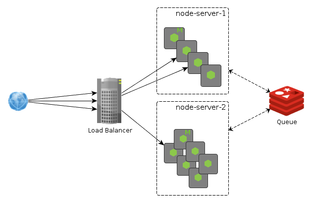

Node.JS 101
An introduction
by Gilly Barr
Agenda
What is nodejs
Why & When to use nodejs
Logz.io + NodeJS = ?
Demo
What is NodeJS ?
A quick history lesson...
2008 - Google released V8
V8 is the open source VM that runs javascript in chrome.
The fastest at the time.2009 - Ryan Dahl released NodeJs
Initially intended to be a web server.
First platform that allows running js on the server side.
What is NodeJS ?
- Single threaded (similar to js in the browser)
- Non-blocking I/O
- Event driven
- Comes with native bindings (C++) for handling files, networking, web sockets, etc.
Why & When to use nodejs ?
Node is single threaded but also non-blocking.
This combination is ideal for building most web servers,
and gives us the ability to stand great load on a single thread.
The anatomy of a web request

Source: Why js and Node.js is right for Internet Applications
The First Rule of Node
All I/O activities (HTTP requests, database queries, file I/O, etc.) should be non-blocking
Instead they run independently and then emit an event when the data is available
Sounds famililar? Events and callbacks
What about scaling ?
We have two main options for scaling a node web app :
- Take advantage of multi-core systems to launch a cluster of node processes
- NodeJS has a built in 'cluster' module to manage that
- Still not enough?
Scaling beyond a single machine

* Your code needs to be stateless.
Source: JavaScript as a Platform
Some more advantages of using nodejs
- Easy to learn and code
- Fast for prototyping
- Single language across client & server
- HUGE ecosystem (npm)
But of course, there are no silver bullets...
(The downsides)-
Slow on computation
Not for running encryption, compression, machine learning, etc. - Lack of inherent code organization (and other cons of js)
- Callback hell (although not really anymore with ECMA 7)
Still not convinced ?
Companies using nodejs in production today :
Logz.io + NodeJS = <3
Play & NodeJS
- Play is the current web server backend. It's a very robust framework written in Scala.
- Until kibana v4.2, we replaced the very lightweight backend with Play.
- kibana 4.5 introduced nodejs as a backend, along with some new server side features.
Play vs. NodeJS ?
- Web applications cannot use 2 different backends.
- We can either implement all the features kibana releases again in Play.
- Or replace our current use of Play with NodeJS, and combine it with kibana's code
Will this work ?
- Play currently does very little computation.
- Most of its work is to proxy requests to services.
- This makes it a perfect candidate to use nodejs.
Demo time
Thank you